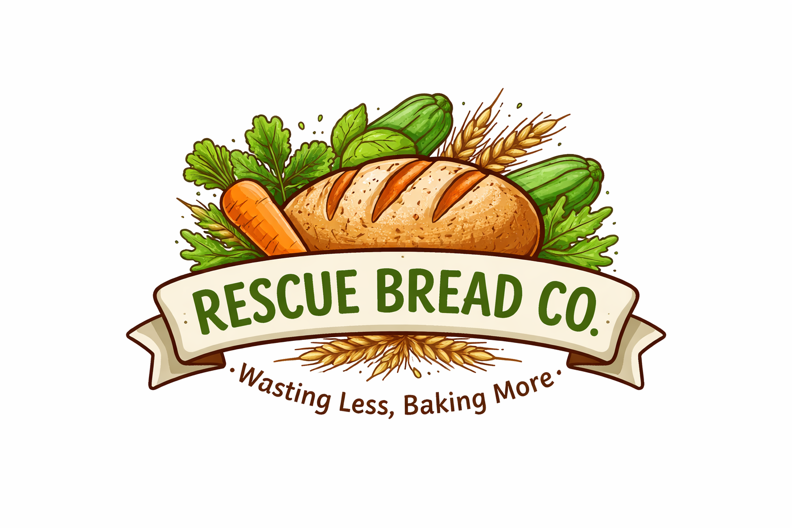

Plant-based artisan breads made from rescued and surplus ingredients — baked fresh in small batches in the Bay Area.
✔ High-Protein
✔ 100% Plant-Based
✔ Upcycled Ingredients
✔ Small-Batch & Fresh
Every loaf I bake:
🌱 reduces food waste
🌱 supports plant-based eating
🌱 provides nutrient-dense whole foods
🌱 celebrates seasonal ingredients
Because my breads use rescued ingredients, flavors change frequently — every batch is exciting.
Hi, I’m Ujala Chauhan.
I’m a student at New York University studying Nutrition and Food Studies and Environmental Science.
Rescue Bread Co. began when I started experimenting with bread baking and realized how many ingredients we throw away.
One day I turned carrot greens — something most people discard — into a savory garlic ciabatta. The result? Incredible.
What if we could transform surplus ingredients into incredible breads instead of throwing them away?
Now I bake breads that are: plant-based, high-protein, nutrient-dense, and made from rescued ingredients.
📍 Belmont, California — Serving the Bay Area
📧 rescuebreadco.com
Instagram & TikTok: @rescuebreadco